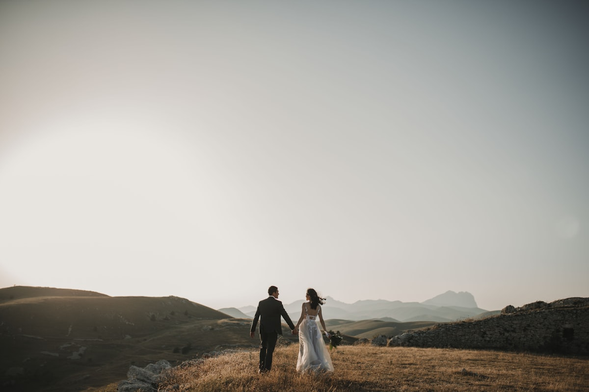
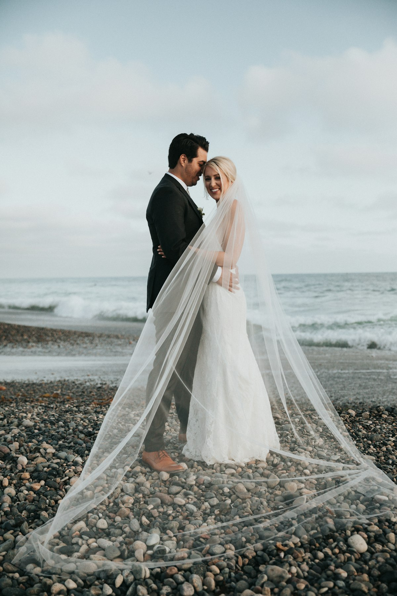
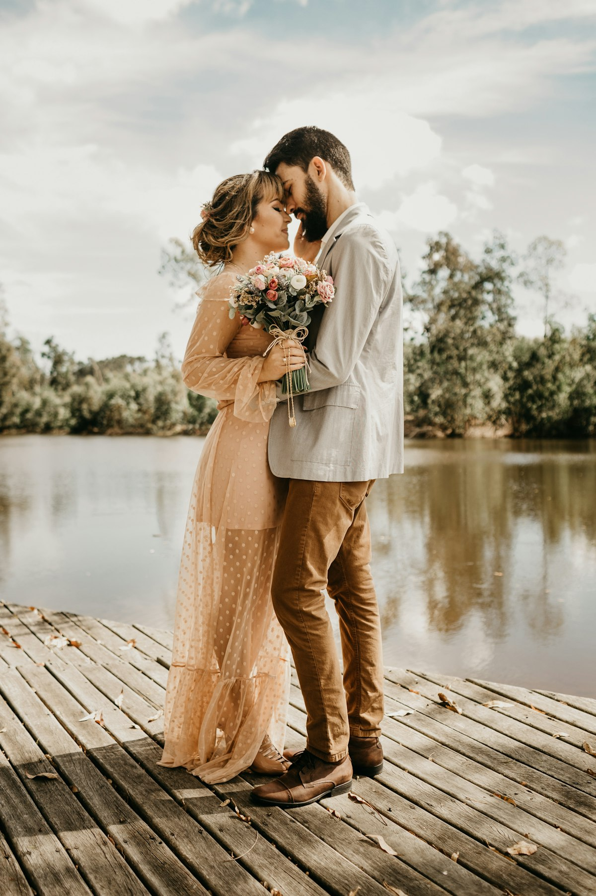
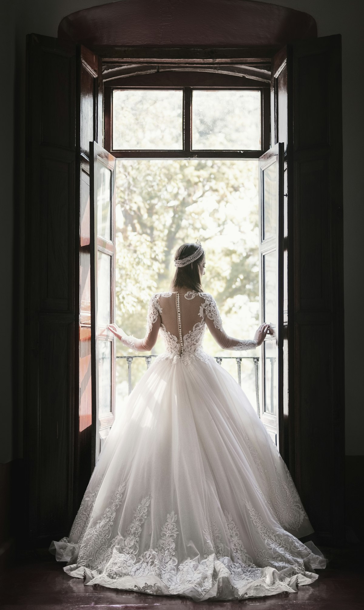
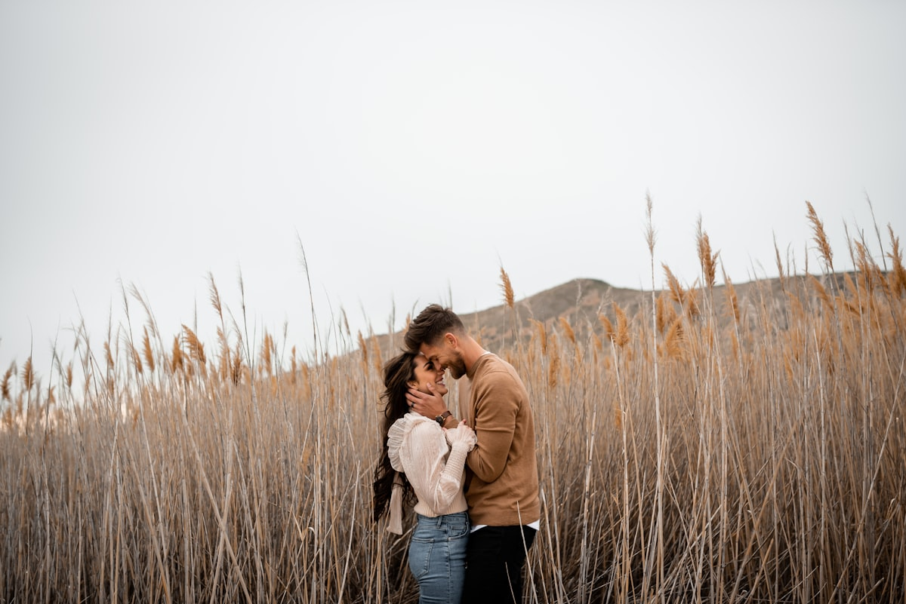
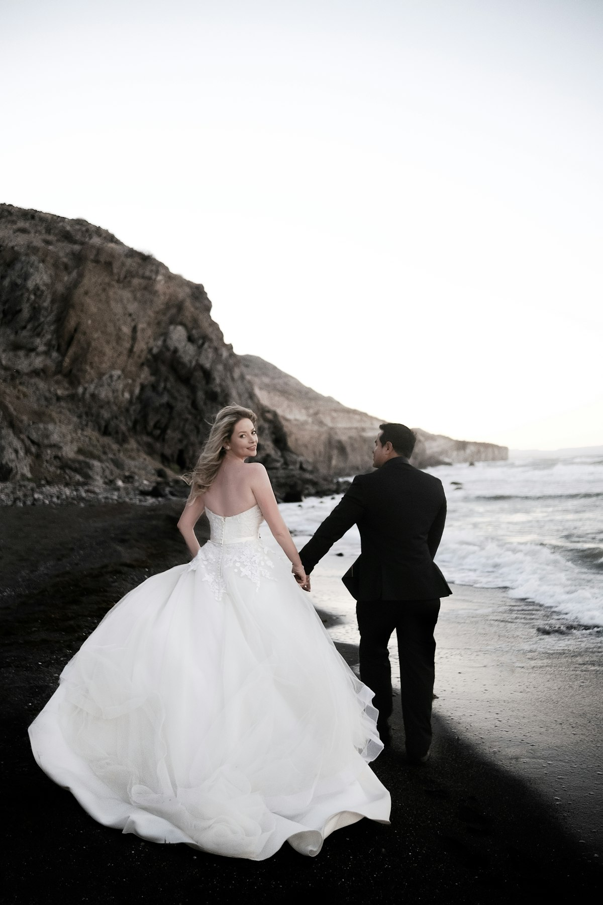
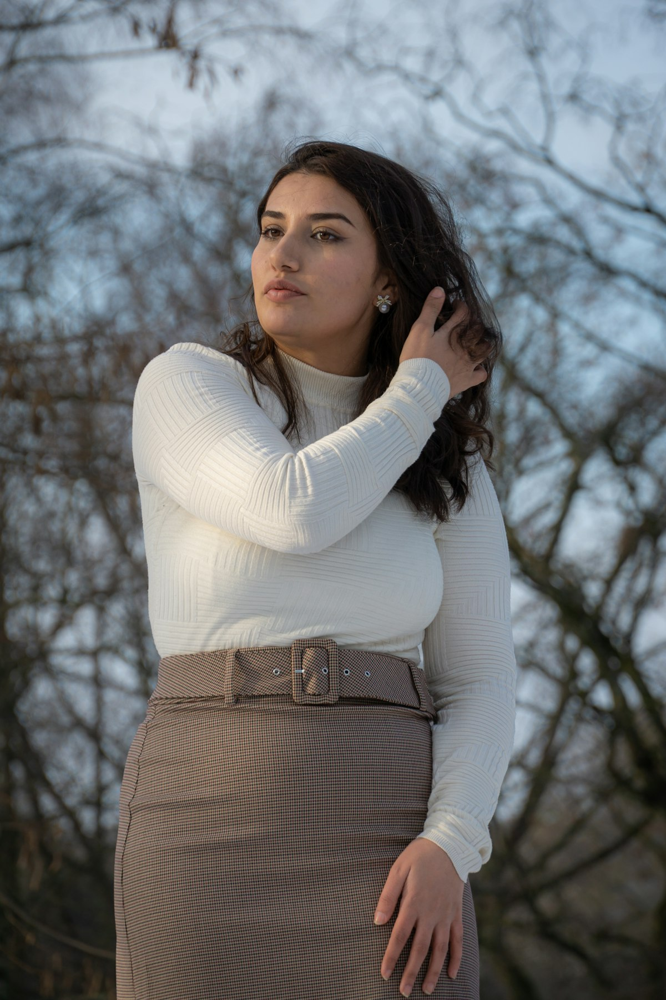

SELECTED WORK
Portfolio
Weddings, engagements, and portraits shot across the Hudson Valley — documentary-first, editorial in the edit.

Ceremony — Millbrook Vineyard
Portrait Session — The Orchard

Elopement — Rhinecliff Shoreline
Engagement — Kaaterskill Falls

Details — Rivertown Inn

Getting Ready — Hollow Barn
Portrait Session — Late Afternoon

Engagement — Olana

A Coastal Elopement

Portrait Session — Autumn Light
Vows — Rivertown Inn
Engagement — Mohonk Preserve